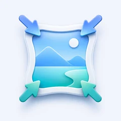
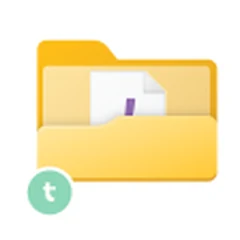

Nanana Soft
個人でアプリとソフトウェアを作って公開しています。このページは、その全部を一枚に並べた目録です。
各製品のサポート窓口とプライバシーポリシーは、それぞれのサイトに置いてあります。
4iOS アプリ3Windows ソフト
iOS アプリ
App StoreWindows ソフト
Vector · GitHub-

-
-

個人でアプリとソフトウェアを作って公開しています。このページは、その全部を一枚に並べた目録です。
各製品のサポート窓口とプライバシーポリシーは、それぞれのサイトに置いてあります。
4iOS アプリ3Windows ソフト

